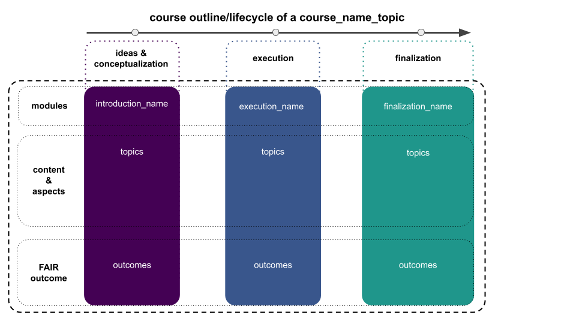

Course overview & procedure#
Traditionally, one way of achieving this is to familiarize students with all parts of the respective processes early on in their studies with an application to real-world problems and questions. More precisely, folks conduct several experiments, provided and self-chosen, within which they perform all or most of the necessary steps of the corresponding research workflow themselves, both in a guided and independent manner. Importantly, all of this will be conducted based on open science principles. This has several important reasons: addressing the faulty direction science and academia in via changing incentive structures (open methodology, open data, open access,open peer review), enable students to become active and self-sufficient parts of the research and scientific community via the sole utilization of open-source software and open educational resources, as well as increasing the diversity and inclusivity of science and academia via the diminution of hurdles and barriers: science by everyone for everyone in an open and welcoming manner.
TL;DR#
Within this course we will course_description. To do so, we will follow a “learning by doing” approach in a tripartite manner. Starting from a basic introduction (Block I), we will run actual experiments/analyzes (Block II) planned and conducted by you, as well as communicate/present the obtained results (Block III). Thus, we actively seek out realistic examples and workflows that mimic the lifecycle of real-world projects, trying to present you with both a respective overview and hands-on experience.

All of this following open science principles as outlined in the rainbow of open science practices below and the aim to enable you to critically evaluate scientific research. Along this way we will also talk about important topics such as #DEI and systematic biases. For a rather precise outline of the course, please consult the respective section.

The framework and setup#
All workshop materials will be provided within the Jupyter Book format you’re currently looking at, free for everyone to check and try out, as well as utilize further. The workshop itself will use a mixture of slides, code and other media within presentations, practical hands-on sessions and discussion rounds to enable a holistic introduction paired with firsthand experience. Depending on a given participant’s computational resources and infrastructure, we provide multiple ways to participate in the workshop as outlined in the Setup for the workshop section.
Instructors#
To provide a holistic introduction into the topic of course_description and its subcomponents, we assembled a stellar team of instructors, i.e. the main team, as well as contributors. You can find the main team below and get further information via clicking on the respective names.
How to address one another?
Provide information on how to address one another during the course.
How to reach the instructors#
The contact information of the instructors are as follows:
Office hours: please contact the team member you would like to talk to via Email
E-mail: please follow the links above
preferred mode of contact: usually online to save time and effort for everyone
Gimme the details#
Below you will find important details regarding the course summarized in a compact form. Please consult and familiarize yourself with the information presented there prior to and/or within the first few days of the course.
When and where#
As this won’t be a “classic” course that entails weekly lectures/assignments, etc. but instead utilizes a different outline that is oriented along the research process, we will have sessions with varying content (situated within three main blocks: introduction/background, project execution, project finalization) every now and then. Combined with a strong focus on project work and direct supervision, we will organize meetings as we go with all participants. Thus, please watch out for E-Mails/Discord notifications!
The in-person meetings will take place in location_name!
View Larger Map
Can I use my calculator?#
For this class you will need frequent access to a computer. None of the analyses that we will be doing will be very intensive, so this does not need to be a modern or “fast” computer. Still, it will need to be running a standard operating system like Windows, Mac OS X, or Linux. Unfortunately, tablets running mobile operating systems (iOS, Android) probably won’t work for this purpose. If this is an issue for you, please get in touch with the instructor as soon as possible so that we can try to figure out a solution. Regarding software and installation thereof, please check the next section.
How do I get all the software and do I have to apply for a loan to get it?#
Don’t worry at all. First, in order to help you get all the software required for the course, a comprehensive installation instruction was compiled. In a step-by-step manner it guides you through the installation process, covering several OS: windows, macos and linux. Second, everything will be completely free of charge as we will only use publicly available open-source software. Why? Because teaching students via proprietary software is just not fair and won’t help anyone: students have to obtain licenses or use those from the university (which usually doesn’t have enough for everyone), leading to tremendous problems regarding inequity now and in the future. Additionally, opens-source software can do everything, if not more, what proprietary software can and is furthermore usually better supported, tested and documented, creating a fantastic sense of community.
Where is everything?#
All course materials (lecture slides, lecture demo notebooks, lab notebooks, homework assignments, etc.) will be available on the course website, i.e. the one you’re looking at right now. Everything will be completely open and free to use, thus constituting an open educational resource you are free to explore, enhance and share. Thus, this website and all materials will also remain up for the entire duration of the course and beyond, ideally to the end of the internet. The usage of this resource and the materials therein will be explained at the beginning and throughout the course.
Syllabus and Text#
As noted above, this page serves as the syllabus for this course, with the precise outline indicated in the respective section. This syllabus is subject to change; students who miss class are responsible for learning about any changes to the syllabus.
This course furthermore has an open shared zotero library where we add all articles presented/discussed during class.
Additional reading material might be added but will always be open & free with students being informed about any addition.
How to get those credits?#
As this is a practical lab course/research internship intended to provide you with an introduction to course_description via a mixture of guided and independent work, your assignments and tasks will be rather diverse and quite different from other modules. This is by all means intended and founded on the idea that this course should entail a holistic overview of the respective skills and research process beyond the classic “do this, do that, n=30, do a t-test, tell a story, publish or perish” nonsense. Instead, the goal is to enable you to critically perceive and evaluate research in this fascinating new field, its implementation and its outcomes, regarding both your own work and that of others. The assignments and tasks aim to reflect these aspects and will entail working on research projects, evaluating that of others, reading project-related and general research-related literature and more. The different parts and grading scheme are further outlined below.
Exams and Assignments#
In general, there will be two classes of assignments and tasks you need to work on in order to (successfully) pass this course: ungraded assessments and a graded report. The first will take place throughout the semester at various time points whereas the latter will entail one interactive research report after the last session.
The ungraded assessments focus on different parts of the research workflow and your active engagement with them:
reading articles/materials for your project/that are assigned for class (individually or in groups)
present a research article (journal club) related to your project (individually)
conduct reviews of another participant’s project and provide feedback (in groups)
prepare a scientific poster showcasing the results of your experiment (individually)
maintain a lab notebook with weekly updates (individually)
provide all resources in a FAIR manner (individually)
The graded interactive research report aims to assess your ability to bring the different parts of the research workflow together:
create an interactive research report via a
jupyter notebook/jupyter bookin the style of a scientific paper summarizing your experiment (individually)
Late Homework & Extension Policy#
If there are Homework assignments they will be due 5 days after a given class. Homework assignments must be turned in on the due date in order to receive full credit. Homework assignment turned in less than 1 week late will be accepted but the score will be penalized by 10%. Homework assignments later than 1 week will not be accepted.
Late homework assignments will also be accepted under exceptional circumstances (e.g., medical or family emergency) and at the discretion of the instructor (e.g. exceptional denotes a rare event) with no penalty. This policy allowing for exceptional circumstances is definitely a right, but courtesy to be used when needed and not abused. Should you encounter such circumstances, simply email assignment to instructor and note “late submission due to exceptional circumstances”. You do not need to provide any further justification or personally revealing information regarding the details.
Academic Honor Code#
You are encouraged to discuss problem sets with classmates and work on them together, but certain written submissions must reflect your own, original work. If you worked with other students on a problem set, please include their names in a statement like “I worked on this homework with XX and YY” on the assignment. If in doubt, ask the instructor.
Notice about missed work due to religious holy days#
Please notify the instructor of your pending absence at least fourteen days prior to the date of observance of a religious holy day. If you must miss a class, an examination, a work assignment, or a project in order to observe a religious holy day, I will give you an opportunity to complete the missed work within a reasonable time after the absence.
Student Accommodations#
Please request a meeting as soon as possible to discuss any accommodations.
Please notify me as soon as possible if the material being presented in class is not accessible.
Please notify me if any of the physical space is difficult for you.
Code of conduct#
This course has a Code of conduct. Please inform yourself about the specifics by carefully reading through the respective section.
How to Get Your Question(s) Answered and/or Provide Feedback#
It’s great that we have so many ways to communicate, but it can get tricky to figure out who to contact or where your question belongs or when to expect a response. These guidelines are to help you get your question answered as quickly as possible and to ensure that we’re able to get to everyone’s questions.
That said, to ensure that we’re respecting everyone’s time and thus will mainly answer questions between normal working hours (M-F 9AM-5PM). The instructors are also going to do their best to stick to these working hours. However, they know that’s not when you may be doing your work. So, please feel free to post messages whenever is best for you while knowing that if you post late at night or on a weekend, you may not get a response until the next weekday. As such, do your best not to wait until the last minute to ask a question.
If you have:
questions about course content - these are awesome! We want everyone to see them and have their questions answered too, so either use the hypothes.is plugin, the
discordchannel, thee-maillist or the GitHub repository.a technical assignment question - come to office hours (or post to
discord). Answering technical questions is often best accomplished ‘in person’ where we can discuss the question and talk through ideas. However, if that is not possible, post your question todiscord. Be as specific as you can in the question you ask. And, for those answering, help your classmates as much as you can without just giving the answer. Help guide them, point them in a direction, provide pseudo code, but do not provide code that answers assignment questions.been stuck on something for a while (>30min) and aren’t even really sure where to start - Programming can be frustrating and it may not always be obvious what is going wrong or why something isn’t working. That’s OK - we’ve all been there! IF you are stuck, you can and should reach out for help, even if you aren’t exactly sure what your specific question is. To determine when to reach out, consider the 2-hour rule. This rule states that if you are stuck, work on that problem for an hour. Then, take a 30 minute break and do something else. When you come back after your break, try for another 30 minutes or so to solve your problem. If you are still completely stuck, stop and contact us (office hours, post on
discord). If you don’t have a specific question, include the information you have (what you’re stuck on, the code you’ve been trying that hasn’t been happening, and/or the error messages you’ve been getting).questions about course logistics - first, check the overview & syllabus. If you can’t find the answer there, first ask a classmate. If still unsure, post on
discord.something super cool to share related to class or want to talk about a topic in further depth - feel free to post on
discord, contact the instructors or come to office hours.some feedback about the course you want to share anonymously - If you’ve been offended by an example in class, really liked or disliked a lesson, or wish there were something covered in class that wasn’t but would rather not share this publicly, etc., please fill out the anonymous Google Form*
*This form can be taken down at any time if it’s not being used for its intended purpose; however, you all will be notified should that happen.
Acknowledgements#
Several parts of this section are directly taken or adapted from Alexander Huth’s Neuro Data Analysis in Python syllabus licensed under a BSD-3-Clause License and Shannon Ellis’ COGS 18: Introduction to Python.